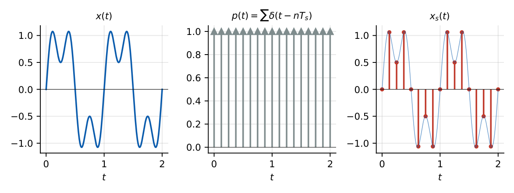
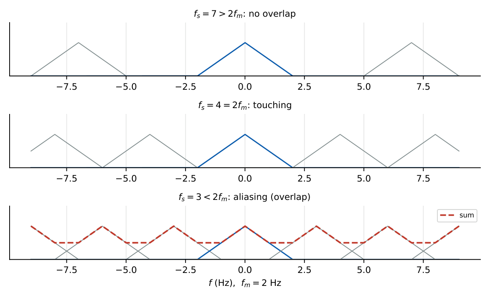
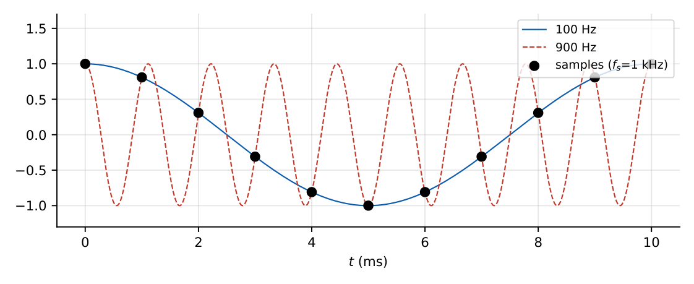
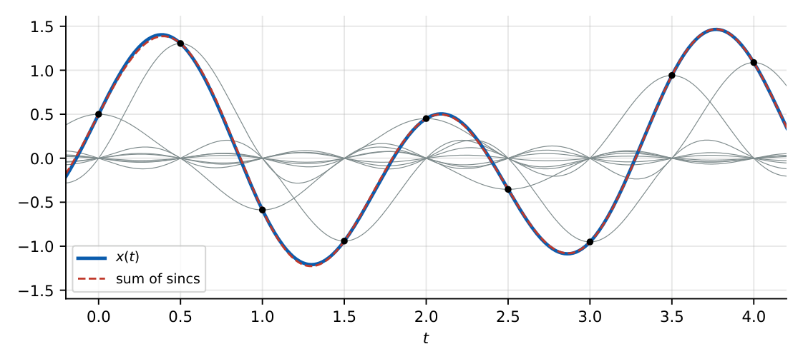
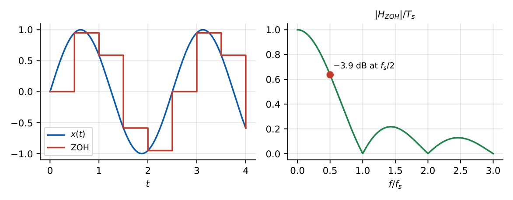
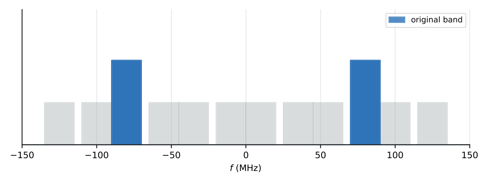

Sampling Theorem
In this chapter
- 21.1 Continuous-to-discrete conversion
- 21.2 Sampling process
- 21.3 Impulse-train sampling and the sampled spectrum
- 21.4 Nyquist sampling theorem
- 21.5 Nyquist rate
- 21.6 Nyquist frequency
- 21.7 Aliasing
- 21.8 Anti-aliasing filter
- 21.9 Reconstruction
- 21.10 Ideal reconstruction filter
- 21.11 Zero-order hold
- 21.12 Bandpass sampling
- 21.13 Undersampling and oversampling
Nyquist rate for given signals (products, convolutions, scaled versions), aliased frequency after sampling, bandpass sampling, reconstruction filter specifications, zero-order hold. Reliable 1–2 marks every year.
21.1 Continuous-to-discrete conversion
Sampling converts \(x(t)\) to the sequence \(x[n]=x(nT_s)\), where \(T_s\) is the sampling period and \(f_s=1/T_s\) (\(\omega_s=2\pi f_s\)) the sampling frequency. The question: can \(x(t)\) be recovered from \(x[n]\)?
21.2 Sampling process

21.3 Impulse-train sampling and the sampled spectrum
\(p(t)=\sum_n\delta(t-nT_s)\leftrightarrow\dfrac{2\pi}{T_s}\sum_k\delta(\omega-k\omega_s)\). Multiplication in time is convolution in frequency:
\(X_s(j\omega)=\dfrac1{T_s}\displaystyle\sum_{k=-\infty}^{\infty}X\big(j(\omega-k\omega_s)\big)\): the spectrum of \(x\) is repeated at multiples of \(\omega_s\) and scaled by \(1/T_s\).

21.4 Nyquist sampling theorem
A band-limited signal with \(X(j\omega)=0\) for \(|\omega|>\omega_m\) (\(f_m=\omega_m/2\pi\)) is uniquely determined by its samples \(x(nT_s)\) if \(f_s>2f_m\) (\(f_s\ge2f_m\) for signals with no energy at \(f_m\)).
21.5 Nyquist rate
The Nyquist rate is the minimum sampling frequency \(2f_m\) (the rate, in samples/s). \(f_s=2f_m\) exactly is the critical case.
21.6 Nyquist frequency
The Nyquist frequency (folding frequency) is \(f_s/2\): the highest frequency that can be represented at a given \(f_s\). (Some textbooks use “Nyquist frequency” for \(f_m\); read the question carefully.)
| Operation on \(x(t)\) (bandwidth \(f_1\), \(y\): bandwidth \(f_2\)) | Bandwidth | Nyquist rate |
|---|---|---|
| \(x(t)\) | \(f_1\) | \(2f_1\) |
| \(x(at)\) | \(|a|f_1\) | \(2|a|f_1\) |
| \(x(t)\,y(t)\) | \(f_1+f_2\) | \(2(f_1+f_2)\) |
| \(x(t)*y(t)\) | \(\min(f_1,f_2)\) | \(2\min(f_1,f_2)\) |
| \(x(t)+y(t)\) | \(\max(f_1,f_2)\) | \(2\max(f_1,f_2)\) |
| \(x^2(t)\) | \(2f_1\) | \(4f_1\) |
| \(x(t)\cos2\pi f_ct\) | \(f_1+f_c\) | \(2(f_1+f_c)\) |
| \(dx/dt\) | \(f_1\) | \(2f_1\) |
\(\sinc(200t)\): spectrum \(\frac1{200}\rect(f/200)\), \(f_m=100\) Hz, rate \(200\) Hz. \(\sinc^2(200t)\): triangular spectrum with \(f_m=200\) Hz, rate \(400\) Hz. \(\dfrac{\sin1000\pi t}{\pi t}\): \(\omega_m=1000\pi\), \(f_m=500\) Hz, rate \(1000\) Hz. Speech limited to \(4\) kHz: \(8\) kHz \(\Rightarrow\) \(8000\) samples per second.
21.7 Aliasing
A tone at \(f\) sampled at \(f_s\) appears at \(f_a=|f-kf_s|\) (choose the integer \(k\) giving \(|f_a|\le f_s/2\)). In discrete time \(\cos(2\pi fnT_s)=\cos(2\pi f_an T_s)\): two different tones produce identical samples.

\(f_s=1\) kHz: a \(900\) Hz tone aliases to \(100\) Hz; \(1300\) Hz aliases to \(300\) Hz. \(x=10\cos2\pi1000t+5\cos2\pi3000t\) has Nyquist rate \(6\) kHz; sampled at \(4\) kHz, the \(3\) kHz tone aliases to \(|3000-4000|=1\) kHz, landing on the \(1\) kHz tone.
21.8 Anti-aliasing filter
Real signals are never perfectly band-limited (noise, harmonics). An analogue low-pass anti-aliasing filter with cutoff \(\le f_s/2\) is placed before the sampler. Transition band must fit in \(f_m\ldots f_s-f_m\); oversampling relaxes this.
21.9 Reconstruction
21.10 Ideal reconstruction filter
Pass \(x_s(t)\) through an ideal low-pass filter with gain \(T_s\) and cutoff \(\omega_c\) with \(\omega_m<\omega_c<\omega_s-\omega_m\) (commonly \(\omega_s/2\)). Interpolation formula:
\(x(t)=\displaystyle\sum_{n=-\infty}^{\infty}x(nT_s)\,\sinc\!\left(\dfrac{t-nT_s}{T_s}\right)\) (each sample scaled by a sinc; sincs are zero at the other sampling instants).

21.11 Zero-order hold
A practical DAC holds each sample for \(T_s\): \[h_{ZOH}(t)=\rect\!\left(\frac{t-T_s/2}{T_s}\right),\qquad H_{ZOH}(j\omega)=T_s\sinc\!\left(\frac{\omega T_s}{2\pi}\right)e^{-j\omega T_s/2}.\] It has droop (\(\sinc\) rolls off by \(3.9\) dB at \(f_s/2\)), imaging, and a delay of \(T_s/2\); compensated by an equaliser and a smoothing filter.

21.12 Bandpass sampling
For a band-pass signal occupying \([f_L,f_H]\) with bandwidth \(B=f_H-f_L\), sampling below \(2f_H\) is possible without aliasing if \[\frac{2f_H}{k}\le f_s\le\frac{2f_L}{k-1},\qquad k=1,2,\ldots,\left\lfloor\frac{f_H}{B}\right\rfloor.\] The minimum rate is obtained with the largest allowed \(k\).
Band \(70\)–\(90\) MHz: \(B=20\), \(\lfloor90/20\rfloor=4\); \(k=4\): \(\dfrac{180}4=45\le f_s\le\dfrac{140}3=46.67\) MHz. Minimum \(f_s=45\) MHz (vs \(180\) MHz for low-pass sampling). Band \(20\)–\(25\) kHz: \(k=5\): \(10\le f_s\le10\); \(f_s=10\) kHz.

21.13 Undersampling and oversampling
Undersampling (\(f_s<2f_m\)) causes aliasing (harmful for low-pass signals; deliberate for band-pass signals). Oversampling (\(f_s\gg2f_m\)) relaxes analogue filters, lowers quantisation noise density, and is used in sigma–delta ADCs.
Q1. A signal band-limited to \(4\) kHz needs a minimum sampling frequency of (A) \(2\) kHz (B) \(4\) kHz (C) \(8\) kHz (D) \(16\) kHz.
Q2. A \(1300\) Hz tone sampled at \(1\) kHz appears at (A) \(300\) Hz (B) \(700\) Hz (C) \(1300\) Hz (D) \(0\) Hz.
Q3. Sampling in time causes in frequency (A) periodic repetition (B) compression (C) shift only (D) truncation.
Answers: Q1 (C). Q2 (A). Q3 (A).
Q4. The Nyquist rate of \(x(t)=\sinc^2(200t)\) is (A) \(200\) Hz (B) \(400\) Hz (C) \(800\) Hz (D) \(100\) Hz.
Q5. A band-pass signal occupies \(70\)–\(90\) MHz. The minimum sampling frequency that avoids aliasing is (A) \(180\) MHz (B) \(90\) MHz (C) \(45\) MHz (D) \(40\) MHz.
Answers: Q4 (B): \(\sinc^2\) has twice the bandwidth of \(\sinc\) (\(f_m=200\)); rate \(400\). Q5 (C).
Q6. \(x(t)\) has bandwidth \(2\) kHz and \(y(t)\) has \(3\) kHz. The Nyquist rate of \(x(t)y(t)\) is kHz.
Q7. A \(4.5\) kHz tone is sampled at \(8\) kHz and reconstructed ideally. The output frequency is kHz.
Answers: Q6: \(2(2+3)=10\) kHz. Q7: \(|4.5-8|=3.5\) kHz.
Q8. Which are true? (A) Nyquist rate for \(x(2t)\) is twice that for \(x(t)\). (B) Convolution of two band-limited signals has the smaller bandwidth. (C) A ZOH introduces \(T_s/2\) delay. (D) Sampling at exactly \(2f_m\) is always sufficient for any band-limited signal.
Answers: Q8: (A), (B), (C). (D) fails for a sinusoid at \(f_m\) sampled at its zero crossings.
(i) Nyquist rate (\(2f_m\)) versus Nyquist frequency (\(f_s/2\)). (ii) Product \(\to\) bandwidths add; convolution \(\to\) minimum. (iii) Using \(\omega_m\) (rad/s) in place of \(f_m\) (Hz). (iv) \(\sinc(200t)\) has \(f_m=100\) (normalised sinc). (v) Bandpass sampling: \(k\) must be an integer \(\le f_H/B\).
T1. Nyquist rate of \(\cos(100\pi t)+\cos(300\pi t)\)? T2. At what frequency does a \(7\) kHz tone appear when sampled at \(10\) kHz?
Answers: T1: \(f_m=150\) Hz, rate \(300\) Hz. T2: \(|7-10|=3\) kHz.
- \(X_s=\frac1{T_s}\sum X(\omega-k\omega_s)\). Nyquist rate \(2f_m\); Nyquist frequency \(f_s/2\).
- Product: BW adds; convolution: min; \(x(at)\): \(|a|f_m\); \(x^2\): \(2f_m\).
- Alias: \(f_a=|f-kf_s|\). Reconstruction: ideal LPF gain \(T_s\); sinc interpolation. ZOH: \(T_s\sinc(fT_s)e^{-j\pi fT_s}\).
- Bandpass: \(\frac{2f_H}k\le f_s\le\frac{2f_L}{k-1}\), \(k\le\lfloor f_H/B\rfloor\).